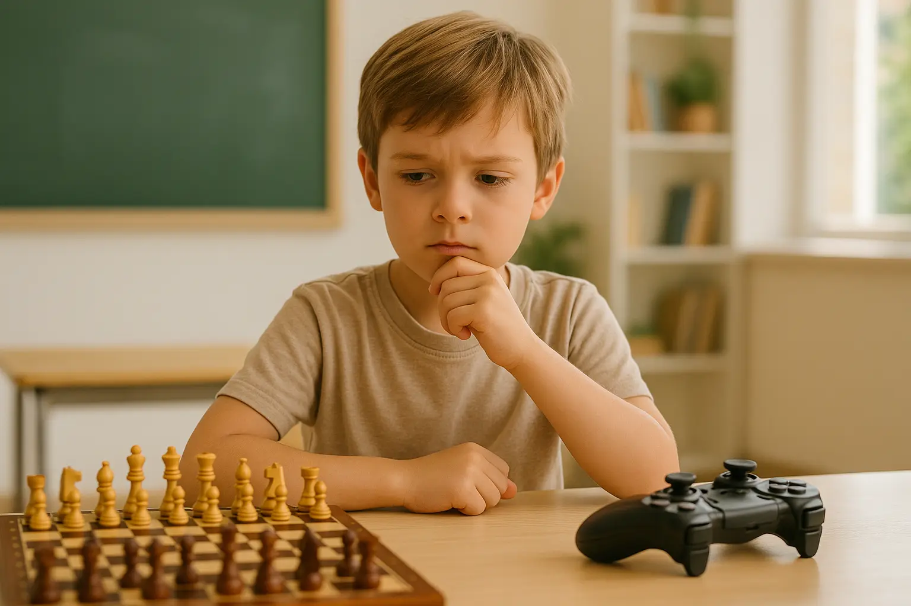

"Papa, encore 5 minutes !" Vous connaissez cette phrase ? Moi aussi. Et je l'entends dans les deux sens : "Encore 5 minutes de Fortnite !" et "Encore 5 minutes d'échecs !"
Depuis 3 ans que j'enseigne les échecs, j'ai vu beaucoup de parents inquiets du temps d'écran de leurs enfants. La question revient toujours : "Les échecs peuvent-ils remplacer les jeux vidéo ?"
La réponse honnête ? Non, pas complètement. Mais c'est plus complexe que ça. Dans cet article, je vais comparer les deux sans langue de bois : les avantages, les limites, et surtout ce que disent les études scientifiques.
Spoiler : Les jeux vidéo ne sont pas le diable. Et les échecs ne sont pas la solution miracle. Mais il y a un équilibre à trouver, et je vais vous aider à le découvrir.
1. Préambule : je ne vais pas diaboliser les jeux vidéo
Avant de commencer, soyons clairs : je joue aux jeux vidéo. J'ai passé des centaines d'heures sur Civilization, Age of Empires, et oui... même Fortnite.
Les jeux vidéo ne sont pas mauvais. Certains développent la réflexion stratégique, la coordination œil-main, la gestion des ressources. Et surtout, ils sont fun. C'est important.
Ce que je ne vais PAS faire dans cet article
- Diaboliser les jeux vidéo
- Dire que les échecs sont supérieurs en tout
- Vous culpabiliser si votre enfant joue
- Vous vendre les échecs comme solution miracle
Ce que je VAIS faire
- Comparer objectivement les deux activités
- M'appuyer sur des études scientifiques
- Partager mon expérience de terrain (3 ans, 20+ élèves)
- Vous donner des outils pour faire votre propre choix
Mon objectif : Vous aider à comprendre ce que chaque activité apporte réellement, pour que vous puissiez faire un choix éclairé pour votre enfant.
2. Bénéfices cognitifs : qui gagne vraiment ?
Commençons par ce qui intéresse tous les parents : est-ce que ça rend mon enfant plus intelligent ?
Les jeux vidéo : ce qui est prouvé
Plusieurs études sérieuses montrent que certains jeux vidéo développent :
Attention visuelle
Les jeux d'action (FPS, Battle Royale) améliorent la capacité à traiter rapidement l'information visuelle.
Étude : Green & Bavelier, Nature, 2003
Coordination œil-main
Amélioration de la précision motrice et des réflexes, bien documentée pour les jeux d'action.
Résolution de problèmes
Les jeux de stratégie (Civilization, Age of Empires) développent la planification à long terme.
Similaire aux échecs sur cet aspect
Multitâche
Capacité à gérer plusieurs informations simultanément.
Nuance : Peut créer de la distraction dans d'autres contextes
Les échecs : ce qui est établi
Mathématiques
C'est le bénéfice le mieux documenté, avec un effet positif modéré et une condition : une pratique régulière sur toute une année scolaire.
Étude : méta-analyse Sala & Gobet, 2016 (24 études, 5 000 enfants)
Concentration soutenue
Une partie lente demande de maintenir son attention, d'examiner les menaces et de vérifier son choix avant de jouer.
Nuance : les études contrôlées ne le mesurent pas aussi nettement que le gain en calcul
Planification
Capacité à comparer plusieurs coups candidats et à évaluer leurs conséquences sur l'échiquier.
Nuance : progresser dans cette compétence aux échecs ne garantit pas un transfert automatique dans les autres matières
Contrôle de l'impulsivité
Le jeu sanctionne immédiatement le coup joué trop vite : l'enfant prend l'habitude de vérifier avant d'agir.
Nuance : constaté en cours, difficile à chiffrer
Des sollicitations différentes
| Dimension | Jeux vidéo | Échecs sur échiquier |
|---|---|---|
| Rythme | Rapide ou variable selon le genre | Lent ou réglable avec la pendule |
| Attention visuelle | Centrale dans certains jeux d'action | Mobilisée pour examiner tout l'échiquier |
| Planification | Très variable selon le type de jeu | Au cœur de chaque partie |
| Interaction sociale | En ligne, souvent par texte ou voix | En face-à-face en club, en famille ou en cours |
| Écran | Oui | Non |
Mon analyse : le genre du jeu vidéo, la cadence choisie aux échecs et la manière de pratiquer comptent davantage qu'un classement simpliste entre les deux activités. Pour approfondir ce sujet, consultez notre article sur ce que disent les études scientifiques sur les échecs et l'intelligence.
3. Le problème du temps d'écran (et pourquoi ça compte)
Voici le vrai sujet qui inquiète les parents. Et c'est légitime.
Ce que disent les recommandations officielles
Recommandations officielles pour les enfants
- OMS, moins de 2 ans : pas de temps d'écran sédentaire pour les nourrissons et les enfants d'un an
- OMS, de 2 à 4 ans : au maximum 1 h par jour, moins étant préférable
- Anses, après 6 ans : éviter de dépasser 2 h par jour de loisirs devant un écran et préserver l'activité physique et le sommeil
La réalité en France (2024) :
- Les enquêtes disponibles situent le temps d'écran quotidien des enfants et des adolescents bien au-delà de ces recommandations, souvent au double
- Et cet écart s'est creusé depuis les confinements
Les chiffres exacts varient beaucoup d'une enquête à l'autre selon ce qu'on compte comme « écran » — je préfère ne pas en citer un plutôt qu'un chiffre trompeur.
Les effets du temps d'écran excessif
Un usage excessif peut être associé à :
- Troubles du sommeil (lumière bleue + excitation)
- Baisse de l'activité physique
- Augmentation de la myopie chez les enfants
- Diminution des interactions sociales en face-à-face
- Difficultés de concentration sur des tâches longues
Le contexte compte : âge, contenu regardé, heure d'utilisation, sommeil, activité physique et accompagnement parental. Une association observée ne signifie pas que l'écran explique à lui seul chaque difficulté.
Les échecs : un temps "hors écran" de qualité
Avantage majeur des échecs : C'est une activité intellectuelle intense qui ne nécessite aucun écran.
Après 1h d'échecs, votre enfant a :
- Travaillé sa concentration sans lumière bleue
- Interagi en face-à-face avec un adversaire/professeur
- Reposé ses yeux (pas de pixels, pas de mouvement rapide)
- Développé sa patience (pas de gratification instantanée)
Nuance importante
Il existe des échecs en ligne (Chess.com, Lichess). Beaucoup de mes élèves jouent en ligne. C'est pratique, ludique, et pédagogique.
Mais : Le temps d'écran reste du temps d'écran. Si votre objectif est de réduire les écrans, privilégiez les échecs physiques.
"J'ai un élève de 10 ans qui jouait 4h/jour à Fortnite. On a négocié : 1h d'échecs physiques avec moi = 30 min de jeux vidéo en bonus. Au bout de 3 mois, il me demandait d'annuler les bonus pour jouer plus longtemps aux échecs. Son temps d'écran a chuté de 4h à 1h30/jour."
5. Addiction et dopamine : la vraie différence
Certains jeux utilisent des mécanismes destinés à prolonger l'engagement : récompenses variables, progression continue, événements limités ou achats intégrés. Cela ne signifie pas que tous les jeux ni tous les joueurs relèvent d'une addiction.
Comment les jeux vidéo "hackent" le cerveau
Les mécanismes d'engagement à connaître
- Récompenses variables : Le cerveau ne sait jamais quand il va gagner (loot, victoire). C'est le même principe que les machines à sous.
- Progression infinie : Il y a toujours un niveau suivant, un skin à débloquer, un classement à grimper.
- FOMO (Fear Of Missing Out) : Événements limités, battle pass, saisons... Il faut jouer MAINTENANT.
- Social pressure : "Tout le monde joue, tu viens ?"
- Micro-transactions : Argent réel investi = attachement émotionnel
Point de vigilance : ces mécanismes peuvent rendre l'arrêt difficile chez certains enfants. L'OMS reconnaît le trouble du jeu vidéo, mais précise qu'il ne concerne qu'une faible proportion des joueurs.
Les échecs : gratification différée
Les échecs, c'est l'inverse :
- Pas de récompense artificielle : Tu gagnes ou tu perds. Point.
- Progression lente : Il faut des mois pour s'améliorer significativement.
- Effort constant : Chaque partie demande de la concentration. On ne peut pas jouer "en automatique".
- Pas de FOMO : L'échiquier sera toujours là demain.
Les échecs ne sont pas automatiquement sans risque d'excès. Toute activité peut prendre une place disproportionnée. La question utile reste la même : est-ce que la pratique empiète sur le sommeil, l'école, l'activité physique ou les relations familiales ?
Un signal simple à observer
Demandez à votre enfant d'arrêter après 30 minutes
Avec les jeux vidéo : "Nooooon ! Encore une partie ! S'il te plaît !" (crise possible)
Avec les échecs : "Ok, j'arrête." (peut-être déçu, mais accepte)
Une difficulté répétée à s'arrêter mérite une discussion et des règles claires, mais ce test informel ne constitue pas un diagnostic.
6. Impact sur les résultats scolaires
Question directe : est-ce que ça aide à l'école ?
Les jeux vidéo et l'école
Études contradictoires :
- Certains travaux trouvent un petit bénéfice des jeux de stratégie sur le raisonnement
- D'autres associent un temps de jeu élevé à de moins bons résultats scolaires
Les effets dépendent du jeu, du temps consacré et de ce qu'il remplace. Certains jeux éducatifs peuvent soutenir un apprentissage précis ; il n'est en revanche pas justifié de promettre une amélioration générale des notes grâce à un jeu de divertissement.
Le vrai problème : le temps volé
Ce ne sont pas les jeux vidéo qui baissent les notes. C'est le temps qu'ils prennent sur les devoirs, la lecture, le sommeil.
C'est d'ailleurs sur le sommeil que l'effet est le plus net : le jeu du soir retarde l'endormissement, et le manque de sommeil pèse ensuite sur les apprentissages.
Les échecs et l'école
Études convergentes :
- La méta-analyse de Sala et Gobet (2016), sur 24 études et plus de 5 000 enfants : impact positif modéré, surtout en mathématiques, plus faible en lecture
- Une condition récurrente : la régularité, de l'ordre d'une séance par semaine sur une année scolaire
- Amélioration de la concentration en classe (témoignages d'enseignants, pas de mesure contrôlée)
Une réserve d'honnêteté : les auteurs de cette méta-analyse soulignent que très peu d'études comparent les échecs à une autre activité encadrée. Une part du bénéfice vient probablement du cadre lui-même, pas des échecs en particulier.
Mon observation personnelle :
"Certains parents et enseignants me disent que l'enfant prend davantage le temps de vérifier avant de répondre. C'est un retour encourageant, mais pas une preuve que les échecs améliorent à eux seuls les résultats scolaires."
7. Le coût réel (argent + temps)
Comparons honnêtement l'investissement nécessaire.
Des budgets très variables
| Option | Budget indicatif | À retenir |
|---|---|---|
| Jeu vidéo sur un appareil déjà possédé | Gratuit à environ 70 € par jeu | Abonnements et achats intégrés éventuels |
| Nouvelle console ou ordinateur | Plusieurs centaines d'euros ou davantage | Dépense non nécessaire si l'équipement existe déjà |
| Échiquier familial | Environ 20 à 50 € | Achat durable, sans abonnement |
| Plateforme d'échecs en ligne | Gratuite ou abonnement optionnel | Nécessite un écran |
| Club d'échecs | Variable selon le club et la ville | Licence, cours collectifs et pratique sociale selon l'offre |
| Cours particulier avec Nicolas | 50 €/h à domicile, 40 €/h en visio | Accompagnement personnalisé ; premier cours offert |
Conclusion : les deux loisirs peuvent être gratuits ou coûteux selon la formule choisie. Pour commencer les échecs hors écran, un échiquier suffit ; le club ou le cours particulier répondent à d'autres besoins, notamment la pratique régulière et l'accompagnement.
8. Mon verdict de prof (après 3 ans sur le terrain)
Bon, on arrête de tourner autour du pot. Voici mon avis honnête.
Les jeux vidéo ont leur place
Je ne vais pas vous dire d'interdire les jeux vidéo. Ça ne marche pas. Votre enfant les trouvera ailleurs (chez les copains, sur le téléphone, etc.).
Les jeux vidéo sont :
- Un moyen de socialisation moderne
- Une détente légitime après l'école
- Une activité fun (et c'est important)
Mais il faut des limites claires :
- Fixer une durée adaptée à l'âge et au rythme familial
- Éviter les écrans en soirée lorsqu'ils retardent l'endormissement
- Préserver d'abord le sommeil, les devoirs, l'activité physique et les échanges en famille
Les échecs : un complément, pas un remplacement
Les échecs ne vont pas remplacer Fortnite dans le cœur de votre enfant. Soyons réalistes.
Mais :
- C'est une activité intellectuelle sans écran
- Ça entraîne des compétences directement utiles au jeu : calcul, planification et prise de décision
- Ça crée un moment de qualité parent-enfant ou prof-élève
La stratégie gagnante (celle que je recommande)
Le deal "échecs bonus"
1h d'échecs (cours ou partie en famille) = 30 min de jeux vidéo bonus
Ce ratio est une idée de règle familiale, pas une recommandation médicale ni une équivalence cognitive. Adaptez-le à votre enfant et évitez d'en faire la seule motivation pour jouer aux échecs.
"Je ne suis pas là pour diaboliser les jeux vidéo. Je suis là pour offrir une alternative intellectuellement stimulante qui donne aux enfants des outils pour réussir. Si mon élève joue aux échecs 1h et à Fortnite 1h, j'ai fait mon job."
9. Comment faire la transition intelligemment
Vous êtes convaincu ? Voici comment introduire les échecs sans guerre ouverte à la maison.
Étape 1 : Ne forcez rien
Erreur classique : "À partir de demain, 1h d'échecs par jour et on limite Fortnite à 30 min !"
Résultat : Rébellion. Frustration. Échec. Si votre enfant se décourage facilement, lisez aussi nos conseils quand un enfant perd toujours aux échecs et comment l'aider.
La bonne approche : "Tiens, j'ai acheté un jeu d'échecs. Ça te dit qu'on essaie ensemble ?"
Étape 2 : Gamifiez les échecs
Votre enfant aime les jeux vidéo parce qu'il y a des niveaux, des défis, des récompenses.
Faites pareil avec les échecs :
- "Défi du jour" : Mat en 2 coups (énigme tactique)
- Système de points : 1 victoire = 10 points, 10 points = récompense au choix
- Classement familial : Qui sera le champion du mois ?
- Utiliser Chess.com avec ses niveaux et badges (oui, c'est un écran, mais c'est éducatif)
Étape 3 : Trouvez le bon format
Cours particuliers : Idéal si vous voulez une progression rapide et du sur-mesure
Club : Idéal si votre enfant aime la socialisation et les tournois
En famille : Idéal si vous voulez créer un moment de qualité (et c'est gratuit)
Étape 4 : Le deal "bonus jeux vidéo"
Une option à tester, si elle convient à votre famille :
- Définissez d'abord une limite d'écran adaptée à l'âge et au rythme de l'enfant
- Proposez une partie d'échecs en famille, sans l'imposer
- Si un système de bonus motive votre enfant, gardez-le modeste et réévaluez-le après quelques semaines
Pourquoi l'essayer : vous ajoutez une activité partagée sans présenter les échecs comme une punition. Ce système ne convient pas à tous les enfants et ne doit pas transformer chaque partie en monnaie d'échange.
Étape 5 : Soyez patient
Ça ne marchera pas du jour au lendemain. Votre enfant ne va pas lâcher Fortnite pour devenir Kasparov en 1 semaine.
Repères possibles, sans calendrier garanti :
- Commencez par des séances courtes et ludiques
- Observez si l'enfant redemande à jouer de lui-même
- Variez entre mini-jeux, problèmes simples et parties complètes
- Si l'intérêt ne vient pas, faites une pause plutôt que de forcer
Vous voulez tenter l'expérience avec un accompagnement pro ?
Je propose des cours d'échecs adaptés aux enfants qui jouent aux jeux vidéo. Ma méthode : rendre les échecs captivants et accessibles, avec un apprentissage concret et des moments de jeu hors écran. Les vacances peuvent être un bon moment pour démarrer — consultez notre guide des activités d'échecs pour enfants pendant les vacances.
Premier cours OFFERT – Contactez-moiConclusion : échecs ET jeux vidéo (pas échecs OU jeux vidéo)
La vraie question n'est pas "échecs ou jeux vidéo".
La vraie question est : "Comment équilibrer ?"
Les jeux vidéo ont leur place. Ils sont fun, sociaux, modernes. Mais ils ne doivent pas monopoliser le temps libre de votre enfant.
Les échecs ne remplaceront jamais Fortnite. Et c'est OK. Mais 1h d'échecs par semaine peut apporter ce qui manque aux jeux vidéo : concentration profonde, patience, réflexion stratégique, interaction réelle. Découvrez en détail tous les bienfaits des échecs pour les enfants dès 5 ans.
Mon conseil final
Ne diabolisez pas les jeux vidéo. Ne les interdisez pas. Mais ne les laissez pas devenir la seule activité de votre enfant.
Proposez les échecs comme un complément. Comme une activité qui développe d'autres muscles cérébraux. Comme un moment de qualité, hors écran, avec vous ou un prof passionné.
Et donnez-lui le choix. Certains enfants vont adorer. D'autres vont préférer les jeux vidéo. Mais au moins, vous aurez essayé. Et c'est déjà ça.
Article recommandé
Votre enfant a du mal à se concentrer ? Découvrez comment les échecs peuvent l'aider :
Échecs et TDAH : Comment les Échecs Aident les Enfants à se Concentrer Une solution naturelle et ludique pour développer l'attention et la patience →
Article rédigé par Nicolas Musicki, professeur d'échecs à Paris et Versailles
Retour à l'accueil |
Me contacter
Questions fréquentes
Les échecs sont-ils meilleurs que les jeux vidéo pour un enfant ?
Les deux activités sollicitent des compétences différentes. Certains jeux vidéo d'action peuvent entraîner l'attention visuelle, tandis que les échecs demandent de planifier et de maintenir son attention sur une partie. Les études sur le transfert des échecs vers les résultats scolaires trouvent des effets modestes, avec d'importantes limites méthodologiques.
Les échecs peuvent-ils remplacer les jeux vidéo ?
Non. Les échecs peuvent compléter les jeux vidéo en offrant une activité hors écran, calme et sociale. Les règles de temps d'écran doivent être adaptées à l'âge de l'enfant, à son sommeil, à son activité physique et à la vie familiale.
Combien de temps d'écran par jour pour un enfant ?
Les recommandations 2019 de l'OMS concernent les moins de 5 ans : pas de temps d'écran sédentaire pour les nourrissons et les enfants d'un an, puis au maximum une heure par jour de 2 à 4 ans, moins étant préférable. En France, l'Anses recommande aussi d'adapter les limites à l'âge et de préserver le sommeil et l'activité physique.
4. Socialisation : échecs vs jeux en ligne
"Mais papa, je joue avec mes copains !" Argument classique. Et valide, en partie.
Les jeux vidéo en ligne : vraie socialisation ?
Points positifs :
Points négatifs :
Les échecs : socialisation "old school"
En cours particulier :
En club ou tournoi :
Mon observation
Les enfants qui jouent uniquement en ligne ont souvent des difficultés à :
Les enfants qui jouent en face-à-face (échecs, jeux de société) développent :